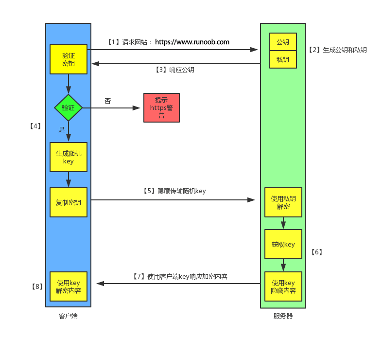
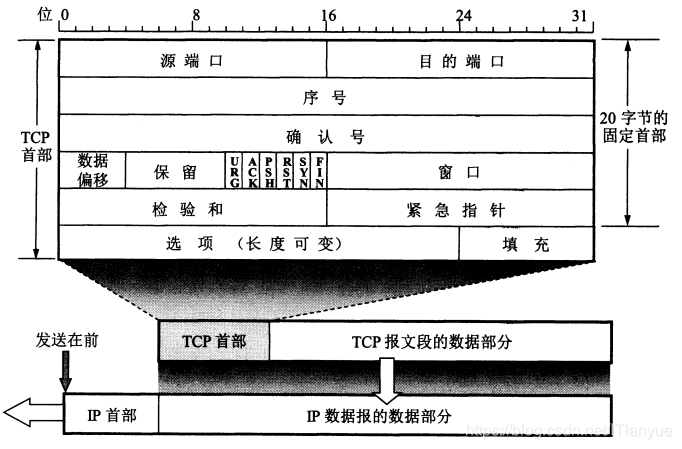
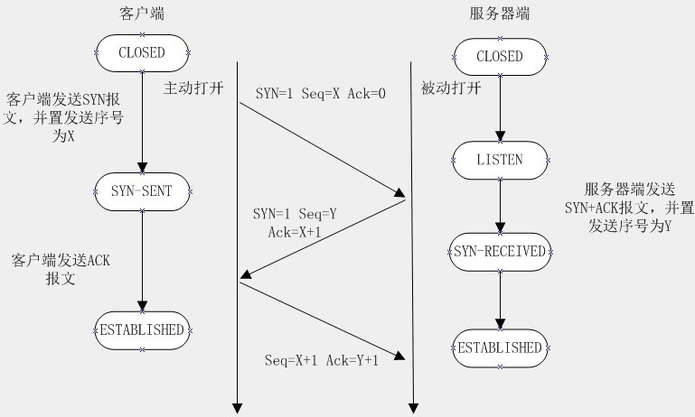
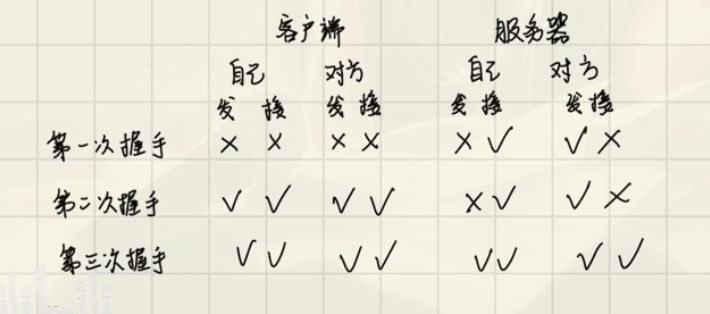

<!-- todo: 还有很多协议和架构组织没有介绍，将会是长线任务 -->
# 计算机网络概述
# 应用层
# HTTP
HTTP 协议，全称超文本传输协议（Hypertext Transfer Protocol）。顾名思义，HTTP 协议就是用来规范超文本的传输，超文本，也就是网络上的包括文本在内的各式各样的消息，具体来说，主要是来规范浏览器和服务器端的行为的。并且，HTTP 是一个无状态（stateless）协议，也就是说服务器不维护任何有关客户端过去所发请求的消息。这其实是一种懒政，有状态协议会更加复杂，需要维护状态（历史信息），而且如果客户或服务器失效，会产生状态的不一致，解决这种不一致的代价更高。
# HTTP 通信过程
- 服务器在 80 端口等待客户的请求。
- 浏览器发起到服务器的 TCP 连接（创建套接字 Socket）。
- 服务器接收来自浏览器的 TCP 连接。
- 浏览器（HTTP 客户端）与 Web 服务器（HTTP 服务器）交换 HTTP 消息。
- 关闭 TCP 连接。

# HTTPS
HTTPS 协议（Hyper Text Transfer Protocol Secure），是 HTTP 的加强安全版本。HTTPS 是基于 HTTP 的，也是用 TCP 作为底层协议，并额外使用 SSL/TLS 协议用作加密和安全认证。默认端口号是 443.HTTPS 协议中，SSL 通道通常使用基于密钥的加密算法，密钥长度通常是 40 比特或 128 比特。
# HTTP 和 HTTPS 的区别
- HTTP 明文传输，数据都是未加密的，安全性较差，HTTPS（SSL+HTTP） 数据传输过程是加密的，安全性较好。
- 使用 HTTPS 协议需要到 CA（Certificate Authority，数字证书认证机构） 申请证书，一般免费证书较少，因而需要一定费用。证书颁发机构如：Symantec、Comodo、GoDaddy 和 GlobalSign 等。
- HTTP 页面响应速度比 HTTPS 快，主要是因为 HTTP 使用 TCP 三次握手建立连接，客户端和服务器需要交换 3 个包，而 HTTPS 除了 TCP 的三个包，还要加上 ssl 握手需要的 9 个包，所以一共是 12 个包。
- HTTP 和 HTTPS 使用的是完全不同的连接方式，用的端口也不一样，前者是 80，后者是 443。
- HTTPS 其实就是建构在 SSL/TLS 之上的 HTTP 协议，所以， HTTPS 比 HTTP 要更耗费服务器资源。
- SEO（搜索引擎优化）：搜索引擎通常会更青睐使用 HTTPS 协议的网站，因为 HTTPS 能够提供更高的安全性和用户隐私保护。使用 HTTPS 协议的网站在搜索结果中可能会被优先显示，从而对 SEO 产生影响。
| HTTP | HTTPS | |
|---|---|---|
| 端口号 | 80 | 443 |
| 协议类型 | 明文传输 | 加密传输 |
| 优点 | 扩展性强、速度快、跨平台 | 保密性好、信任度高 |
# SSL/TLS
SSL（Secure Sockets Layer）和 TLS（Transport Layer Security）属于传输层与应用层之间 的协议，通常称为安全套接层。
- OSI 模型：位于会话层（第 5 层）与表示层（第 6 层）之间。
- TCP/IP 模型：在传输层（TCP）之上、应用层（如 HTTP）之下，为应用层提供加密支持。
# 核心作用
- 数据加密：防止传输内容被窃听（如密码、银行卡号）。
- 身份认证：通过证书验证服务器 / 客户端身份（防钓鱼）。
- 完整性校验：防止数据被篡改（如中间人攻击）。
# SSL 和 TLS 的区别
SSL 和 TLS 本质是同一技术的不同版本，TLS 是 SSL 的标准化升级版。以下是关键差异：
| 特性 | SSL | TLS |
|---|---|---|
| 版本历史 | SSL 1.0（未发布）、2.0（1995）、3.0（1996） | TLS 1.0（1999）、1.1（2006）、1.2（2008）、1.3（2018） |
| 安全性 | 存在已知漏洞（如 POODLE 攻击） | 更安全的加密算法（如 AES、ChaCha20） |
| 加密算法 | 支持弱算法（如 RC4、SHA-1） | 淘汰弱算法，强制使用强加密（如 AEAD） |
| 握手速度 | 慢（RSA 密钥交换） | 更快（TLS 1.3 支持 1-RTT 握手） |
| 兼容性 | 已废弃（现代浏览器 / 服务器不再支持） | 广泛支持（TLS 1.2/1.3 是当前标准） |
# SSL/TLS 工作原理
# 传输层
# TCP

TCP 首部包括 20 字节的固定首部部分及长度可变的其他选项，所以 TCP 首部长度可变。20 个字节又分为 5 部分，每部分 4 个字节 32 位，如图中的前 5 行，每行表示 32 位。细节如下：
源端口和目的端口字段：各占 2 字节（16 位）。端口是运输层与应用层的服务接口。运输层的复用和分用功能都要通过端口才能实现。
序号：在建立连接时由计算机生成的随机数作为其初始值，通过 SYN 包传给接收端主机，每发送一次数据，就累加一次该数据字节数的大小。用来解决网络包乱序问题。
确认号：指下一次期望收到的数据的序列号，发送端收到这个确认应答以后可以认为在这个序号以前的数据都已经被正常接收。用来解决丢包的问题。
控制位：
ACK：该位为 1 时，确认应答的字段变为有效，TCP 规定除了最初建立连接时的 SYN 包之外该位必须设置为 1 。
RST：该位为 1 时，表示 TCP 连接中出现异常必须强制断开连接。
SYN：该位为 1 时，表示希望建立连接，并在其序列号的字段进行序列号初始值的设定。
FIN：该位为 1 时，表示今后不会再有数据发送，希望断开连接。当通信结束希望断开连接时，通信双方的主机之间就可以相互交换 FIN 位为 1 的 TCP 段。
紧急 URG —— 当 URG = 1 时，表明紧急指针字段有效。它告诉系统此报文段中有紧急数据，应尽快传送(相当于高优先级的数据)。 即URG=1的数据包不用排队直接优先传输。
数据偏移（即首部长度）：占 4 位，它指出 TCP 报文段的数据起始处距离 TCP 报文段的起始处有多远，也就是 TCP 首部的长度。“数据偏移” 的单位是 32 位字（以 4 字节为计算单位），最大 1111 表示 15x4=60 个字节，即表示 TCP 首部最大长度为 60 个字节，因此 “选项” 部分最多 40 个字节。
保留字段：占 6 位，保留为今后使用，但目前应置为 0。
窗口字段：占 2 字节，用来让对方设置发送窗口的依据，单位为字节。
检验和 ：占 2 字节。检验和字段检验的范围包括首部和数据这两部分。在计算检验和时，要在 TCP 报文段的前面加上 12 字节的伪首部。
紧急指针字段： 占 16 位，指出在本报文段中紧急数据共有多少个字节（紧急数据放在本报文段数据的最前面）。
# 为什么需要 TCP
IP 层是不可靠的，它不保证网络包的交付、不保证网络包的按序交付、也不保证网络包中的数据的完整性。
如果需要保障网络数据包的可靠性，那么就需要由上层（传输层）的 TCP 协议来负责。
因为 TCP 是一个工作在传输层的可靠数据传输的服务，它能确保接收端接收的网络包是无损坏、无间隔、非冗余和按序的。
# 什么是 TCP 连接
简单来说就是，用于保证可靠性和流量控制维护的某些状态信息，这些信息的组合，包括 Socket、序列号和窗口大小称为连接。
所以我们可以知道，建立一个 TCP 连接是需要客户端与服务端端达成上述三个信息的共识。
- Socket：由 IP 地址和端口号组成
- 序列号：用来解决乱序问题等
- 窗口大小：用来做流量控制
# 三次握手和四次挥手
# 三次握手

- 第一次握手：客户端尝试连接服务器，向服务器发送 syn 包（同步序列编号 Synchronize Sequence Numbers），syn=j，客户端进入 SYN_SEND 状态等待服务器确认
- 第二次握手：服务器接收客户端 syn 包并确认（ack=j+1），同时向客户端发送一个 SYN 包（syn=k），即 SYN+ACK 包，此时服务器进入 SYN_RECV 状态
- 第三次握手：第三次握手：客户端收到服务器的 SYN+ACK 包，向服务器发送确认包 ACK (ack=k+1），此包发送完毕，客户端和服务器进入 ESTABLISHED 状态，完成三次握手

通过上图可以知道，建立同步 TCP 连接至少要三次，才能确认客户端和服务器端的接发能力。
在 HTTP 通过 TCP 协议建立连接时，服务端会维护半连接队列（SYN Queue）和全连接队列（Accept Queue）。当这两个队列空间不足时，会触发 TCP 的拥塞控制机制。
- 半连接队列（也称 SYN Queue）：当服务端收到客户端的 SYN 请求时，此时双方还没有完全建立连接，它会把半连接状态的连接放在半连接队列。
- 全连接队列（也称 Accept Queue）：当服务端收到客户端对 ACK 响应时，意味着三次握手成功完成，服务端会将该连接从半连接队列移动到全连接队列。如果未收到客户端的 ACK 响应，会进行重传，重传的等待时间通常是指数增长的。如果重传次数超过系统规定的最大重传次数，系统将从半连接队列中删除该连接信息。
# UDP
# 网络层
# 数据链路层
# 物理层
# Reference
- runoob
- HTTP(S)
- 3 次握手
- 图解 TCP